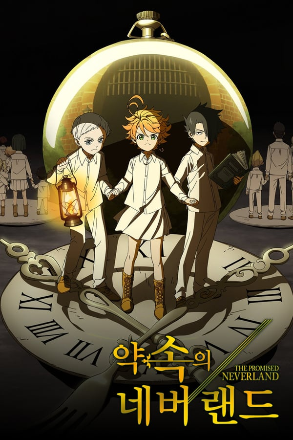
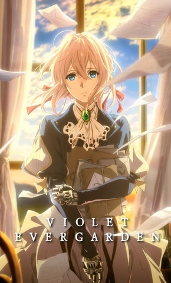

| Nome | Autor | Episódios | Nota | Capa |
|---|---|---|---|---|
| Kakegurui | Homura Kawamoto | 2 temp. 24 ep. | ☆☆ | |
| Diabolik Lovers | Seiko Nagatsu | 1 temp. 12 ep. | ☆ | |
| The Promised Neverland | Kaiu Shirai | 1 temp. 12 ep. | ☆☆☆ |  |
| Yuri!!! on Ice | Sayo Yamamoto | 1 temp. 12 ep. | ☆☆☆☆ | |
| Death Note | Tsugumi Ohba | 1 temp. 37 ep. | ☆☆☆☆ |  |
| One Piece(não terminei) | Eiichiro Oda | Alabasta ep.130 | ☆☆☆ | |
| Jujutsu Kaisen | Gege Akutami | 1 temp. 24 ep. | ☆☆☆☆ |  |
| Haikyuu!! | Haruichi Furudate | 4 temp. 85 ep. | ☆☆☆☆☆ | |
| Demon Slayer | Koyoharu Gotōge | 3 temp. 44 ep. | ☆☆☆☆ |  |
| Blue Period | Tsubasa Yamaguchi | 1 temp. 12 ep. | ☆☆☆☆ | |
| Attack on Titan | Hajime Isayama | 4 temp. 95 ep. | ☆☆☆☆☆ |  |
| SK8 the infinity | Hiroko Utsumi | 1 temp. 12 ep. | ☆☆☆☆ | |
| Given | Natsuki Kizu | 1 temp. 11 ep. | ☆☆☆☆ | |
| Violet Evergarden | Kana Akatsuki | 1 temp. 16 ep. | ☆☆☆☆ |  |
| Bungo Stray Dogs | Yōji Enokido | 2 temp. 37 ep. | ☆☆☆ | |
| Sword Art Online | Reki Kawahara | 2 temp. 50 ep. | ☆☆☆ | |
| Banana Fish | Akimi Yoshida | 1 temp. 24 ep. | ☆☆☆☆☆ |  |
| Saiki Kusuo(não terminei) | Shuichi Aso | 1 temp. 24 ep. | ☆☆ | |
| Tokyo Revengers | Ken Wakui | 1 temp. 24 ep. | ☆☆☆ |  |
| Your Lie in April | Naoshi Arakawa | 1 temp. 22 ep. | ☆☆☆☆ |  |
| Wotakoi | Fujita | 1 temp. 11 ep. | ☆☆☆☆☆ | |
| Shokugeki no Soma | Yūto Tsukuda | 1 temp. 24 ep. | ☆☆ | |
| Spy x Family(lançando) | Tatsuya Endo | 1 temp. 7 ep. | ☆☆☆☆☆ |  |